HERRAMIENTAS · PROPUESTA TÉCNICA
Tecnologías utilizadas en RUNCTY
Lenguajes, plataformas y herramientas contempladas para el desarrollo del proyecto.
ECOSISTEMA RUNCTY
Todo conectado.
Un mismo proyecto.
RUNCTY es un proyecto que busca facilitar la planificación de rutas seguras para corredores en la ciudad de Loja. Para su desarrollo se proponen las siguientes tecnologías.
 TypeScript
TypeScript React
React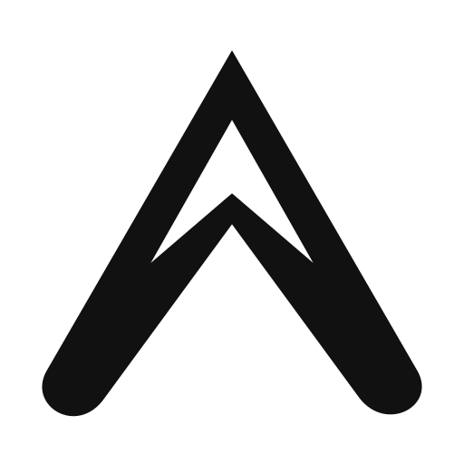
Expo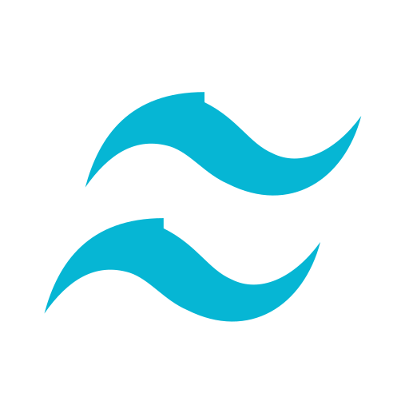
Tailwind CSS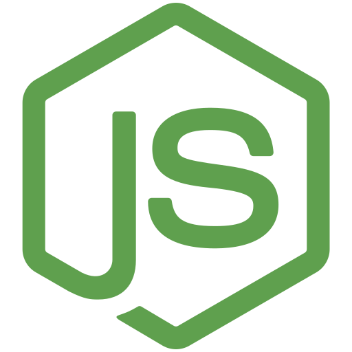
Node.js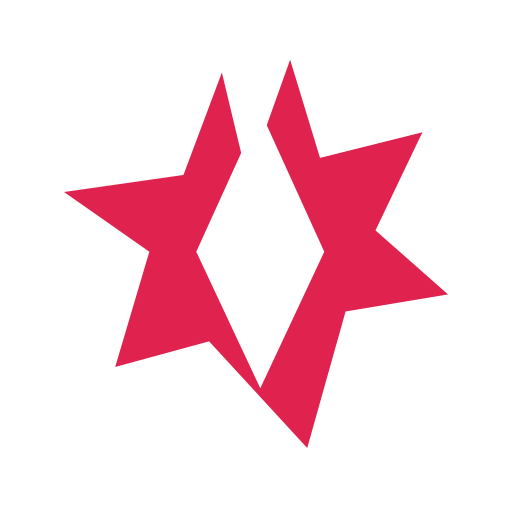
NestJS PostgreSQL
PostgreSQLOpenStreetMap
 MapLibre
MapLibre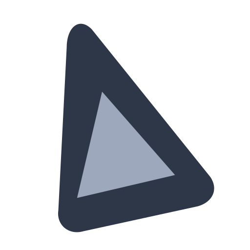
PrismaSupabase
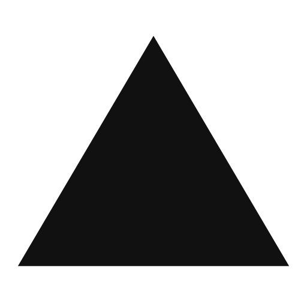
Vercel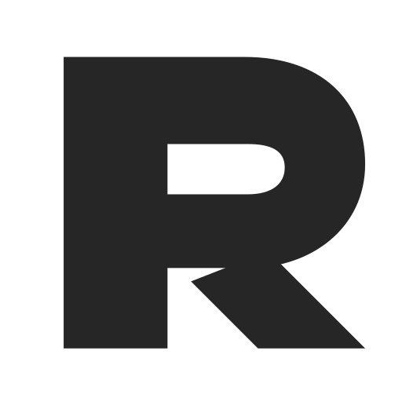
Render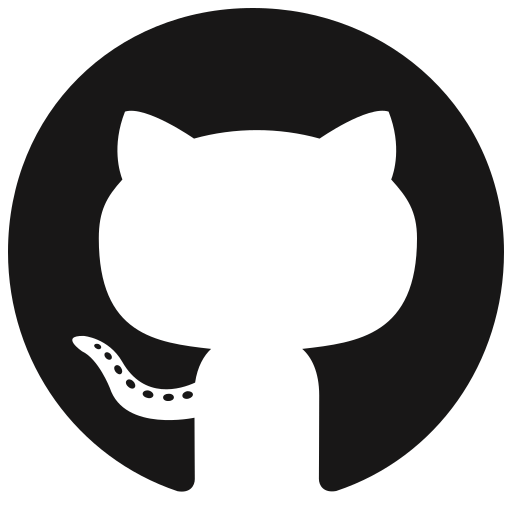
GitHub Figma
Figma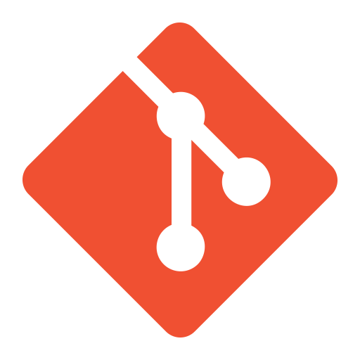
Git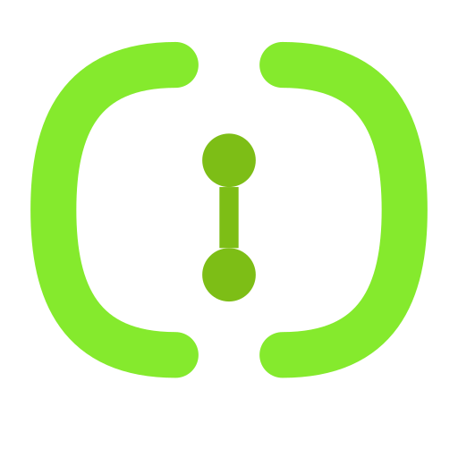
Swagger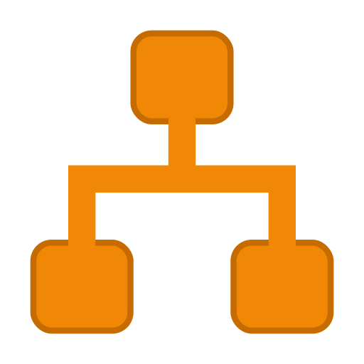
draw.ioVisual Studio Code
TECNOLOGÍAS Y HERRAMIENTAS
¿Para qué sirve cada una?
| Tecnología | Uso en el proyecto RUNCTY |
|---|---|
| TypeScript | Lenguaje para desarrollar la web, la aplicación móvil y el servidor. |
| React | Permite crear las interfaces de la página web y el panel administrativo. |
| Expo | Facilita el desarrollo de la aplicación móvil para Android. |
| Tailwind CSS | Ayuda a diseñar interfaces adaptables y mantener estilos uniformes. |
| Node.js | Permite ejecutar el código del servidor. |
| NestJS | Organiza la API REST y las funciones principales del sistema. |
| PostgreSQL | Almacena usuarios, rutas, reportes y otros datos del proyecto. |
| OpenStreetMap | Proporciona información de calles y caminos para los mapas de Loja. |
| MapLibre | Permite visualizar mapas interactivos y recorridos de los corredores. |
| Prisma | Facilita el acceso a la base de datos desde el servidor. |
| Supabase | Servicio propuesto para alojar la base de datos en la nube. |
| Vercel | Servicio propuesto para publicar la aplicación web. |
| Render | Servicio propuesto para alojar el servidor de RUNCTY. |
| GitHub | Almacena el repositorio del proyecto y facilita el trabajo en equipo. |
| Figma | Permite diseñar los prototipos de la aplicación web y móvil. |
| Git | Controla los cambios realizados en el código del proyecto. |
| Swagger | Permite documentar y consultar los servicios de la API REST. |
| draw.io | Permite crear diagramas para representar el funcionamiento del sistema. |
| Visual Studio Code | Editor utilizado para escribir y organizar el código del proyecto. |